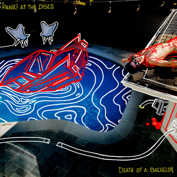

Death of a Bachelor
Panic at the Disco
Original Video

[Verse 1]
Do I look lonely? I see the shadows on my face
People have told me I don't look the same
Maybe I lost weight, I'm playing hooky with the best of the best
Pull my heart out my chest, so that you can see it too
[Pre-Chorus]
I'm walking the long road, watching the sky fall
The lace in your dress tangles my neck, how do I live?
[Chorus]
The death of a bachelor, o-o-oh! Letting the water fall
The death of a bachelor, o-o-oh! Seems so fitting for
Happily ever after, ooh, how could I ask for more?
A lifetime of laughter at the expense of the death of a bachelor
[Verse 2]
I'm cutting my mind off, feels like my heart is going to burst
Alone at a table for two, and I just wanna be served
And when you think of me, am I the best you've ever had?
Share one more drink with me, smile even though you're sad
[Pre-Chorus]
I'm walking the long road, watching the sky fall
The lace in your dress tangles my neck, how do I live?
[Chorus]
The death of a bachelor, o-o-oh! Letting the water fall
The death of a bachelor, o-o-oh! Seems so fitting for
Happily ever after, ooh, how could I ask for more?
A lifetime of laughter at the expense of the death of a bachelor
[Instrumental Bridge]
[Chorus]
The death of a bachelor, o-o-oh! Letting the water fall
The death of a bachelor, o-o-oh! Seems so fitting for
Happily ever after, ooh, how could I ask for more?
A lifetime of laughter at the expense of the death of a bachelor